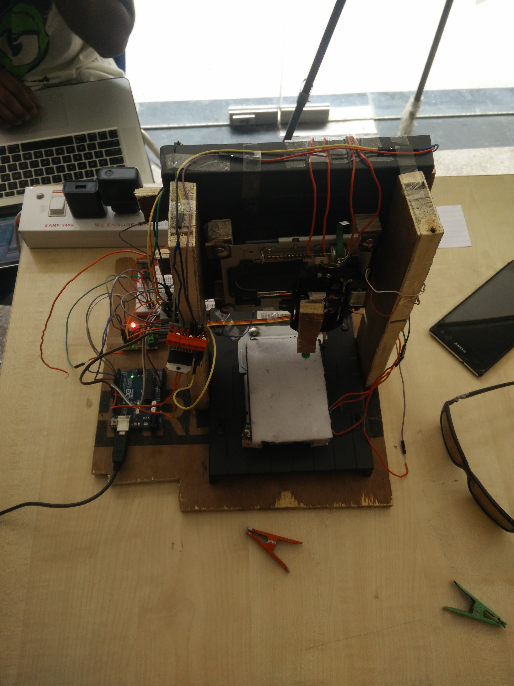

BrailleIO

A prototype of a Braille printer
made using old CD/DVD drives
Outcome
Finalist in the Delhi Maker Fair 2016
Finalist in the Delhi Maker Fair 2016
Role
Physical Prototyping, UX Research
Physical Prototyping, UX Research
Team
Aman Agarwal, Amit Jaggi, Varnit Jain, Shubham Kumar
Aman Agarwal, Amit Jaggi, Varnit Jain, Shubham Kumar
Tools
C, Arduino
C, Arduino
Timeline (Jan '16 - May '16)
Research
4 weeks
Visited a school for the visually impaired and understood current education practices
4 weeks
Visited a school for the visually impaired and understood current education practices
Physical Prototyping
8 weeks
Used old CD/DVD drivers to create a 3 Axis CNC
8 weeks
Used old CD/DVD drivers to create a 3 Axis CNC
Programming
6 weeks
Programmed H-Bridges to control servo motors and connect via Bluetooth
6 weeks
Programmed H-Bridges to control servo motors and connect via Bluetooth
Research
In spring 2016, I took a course called "Introduction to Engineering Design".
For the course project, we wanted to make a prototype of a braille printer.
At that point, I was not aware of the term "User Research,"
yet I understood
that to solve a problem, we needed to talk to the users. So we decided to visit
a school for the visually challenged to understand the following:
- The working of a braille printer
- The use cases for faculty/students
- Specific Pain Points
We spoke to teachers and students in various learning stages to understand
how they interacted with the printer and how we could help.
There were two primary interest areas - low cost
and accessibility.
Circuit Design
We knew that we needed to make a 3 Axis CNC for the braille printer.
We decided to use servo motors for precision and power and decided
to use H-bridges to control them via an Arduino. Here is our
final circuit diagram:
Hacking
We wanted to keep the cost of the project to a minimum because
the low cost was an important research finding and we
weren't assigned any budget for the project. Hence,
we went dumpster diving in a nearby electronics market.
We went shop to shop and asked for discarded and broken
CPUs, Laptops, PlayStations, etc. We wanted to use the small
servo motors found inside the CD/DVD tray for our 3 Axis CNC.
We were able to find three motors from the following electronics:
- a broken laptop
- a discarded CPU
- an old VCR player
Proof of Concept
Here is a proof of concept where all three servos are seen
working independently with commands from the serial input of an Arduino.
Prototype
The following video shows the final working 3 Axis CNC -
a machine that can be used to control an object (the braille
printing tip) along the X, Y, and Z-axis simultaneously.
To make the printer accessible, we allowed users to print braille using
commands via Bluetooth. The picture below shows the final
prototype used to print braille via smartphones.

If you would like to know more about this project,
reach out to me at [varnit@gatech.edu] or
[LinkedIn] .